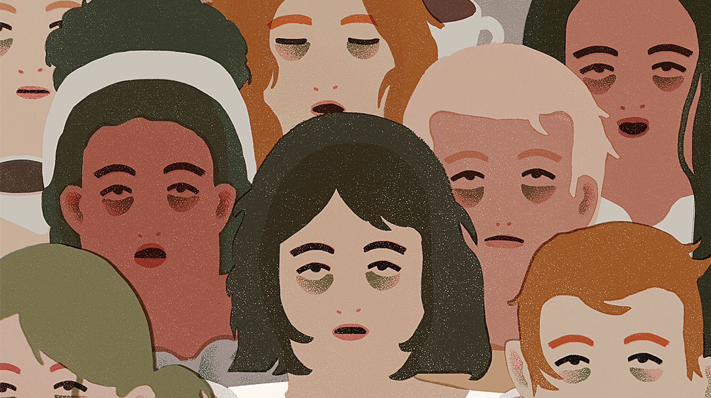

Struggling to Stay Awake? Learn How Sleep Deprivation Affects You.
Sleep is essential for both mental and physical health, yet millions of people suffer from sleep deprivation every day. Whether it’s due to stress, lifestyle choices, or medical conditions, missing out on sleep can have serious consequences.
What is Sleep Deprivation?
Sleep deprivation happens when you don’t get enough rest to meet your body’s needs. Most adults need 7 to 9 hours of sleep per night to stay healthy. However, many people fall short due to busy schedules, work, or stress. Lifestyle factors, like late nights or excessive screen time, can also contribute to sleep loss. Over time, even small sleep deficits can build up and affect your well-being. Prioritizing rest is key to feeling your best both mentally and physically.
The Warning Signs of Sleep Deprivation:
- Feeling drowsy during the day
- Trouble concentrating and poor memory
- Increased irritability or mood swings
- Weakened immune system
- Microsleeps (brief, involuntary episodes of sleep during waking hours)
Why Sleep Matters
When you get enough rest, your body has time to recover and repair itself. Sleep plays a vital role in maintaining your physical health, from regulating hormones to boosting your immune system. It also allows your brain to process information and strengthen memory. Without adequate rest, focus and concentration can suffer. Proper sleep helps stabilize your mood and reduce stress. Overall, getting enough sleep is essential for feeling energized, productive, and healthy.